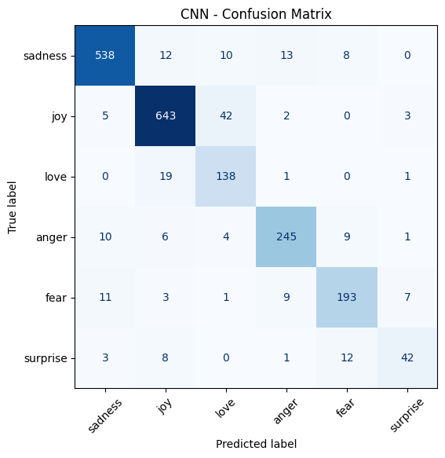
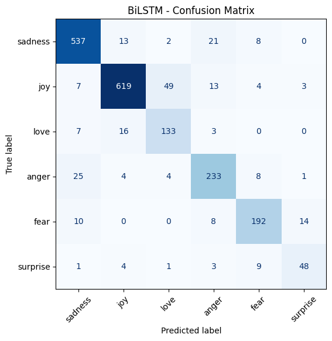
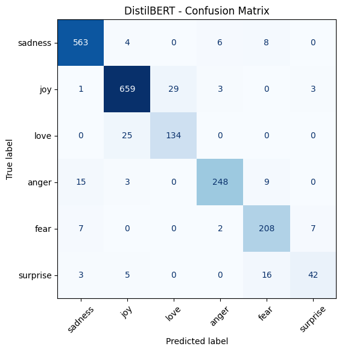
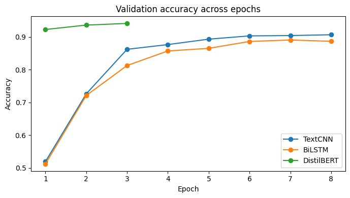
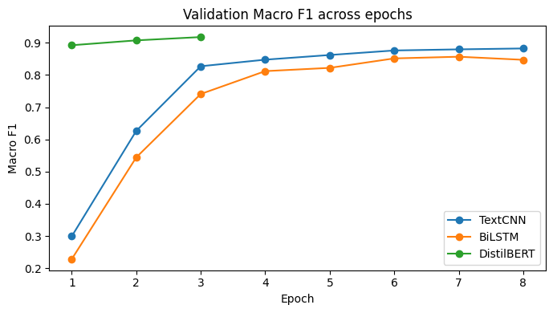
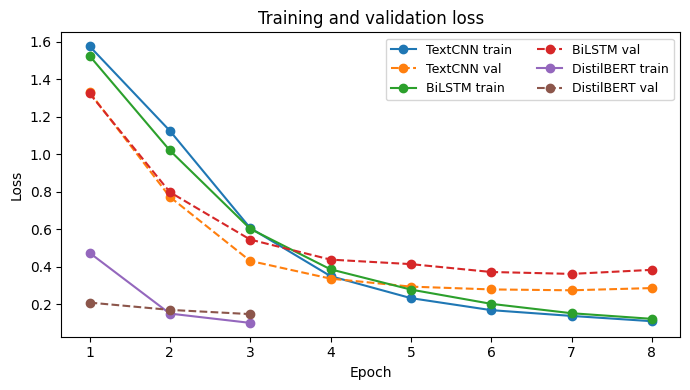

Notebook Assets
Dataset: emotion
Classical branch: CNN + BiLSTM (RNN)
Transformer branch: DistilBERT
Assignment 1 / Text
Interactive summary extracted from DLA_Text_Classification.ipynb. The page separates the classical token-index pipeline for CNN/BiLSTM from the pretrained DistilBERT pipeline, and keeps the final model comparison in a standalone section.
Our project compares three models: a simple TextCNN, a BiLSTM, and a DistilBERT. DistilBERT is the strongest model by a clear margin, which confirms the value of pretrained contextual representations for this emotion classification task. CNN is a strong lightweight baseline that outperforms BiLSTM in this experiment, but BiLSTM does not show enough of an advantage over CNN to justify its extra complexity.
Dataset split
16000 / 2000 / 2000
Best model
DistilBERT
Fastest model
CNN
Label count
6
Input text: i didnt feel humiliated
Label id: 0
Label name: sadness
The notebook first checks whether the official emotion split is balanced enough for comparison. The split sizes are stable, but the class distribution is clearly imbalanced, especially for surprise and love.
| Split | Samples |
|---|---|
| Train | 16000 |
| Validation | 2000 |
| Test | 2000 |
| Label | Train | Validation | Test |
|---|---|---|---|
| sadness | 4666 | 550 | 581 |
| joy | 5362 | 704 | 695 |
| love | 1304 | 178 | 159 |
| anger | 2159 | 275 | 275 |
| fear | 1937 | 212 | 224 |
| surprise | 572 | 81 | 66 |
Length statistics are very consistent across train, validation, and test. That means model comparison is not distorted by one split containing much longer texts than the others.
| Split | Mean Words | Median Words | Max Words | Mean Chars | Median Chars | Max Chars |
|---|---|---|---|---|---|---|
| Train | 19.17 | 17 | 66 | 96.85 | 86 | 300 |
| Validation | 18.87 | 17 | 61 | 95.35 | 85 | 295 |
| Test | 19.15 | 17 | 61 | 96.59 | 86 | 296 |
| Label | Average Words In Train Split |
|---|---|
| sadness | 18.36 |
| joy | 19.50 |
| love | 20.70 |
| anger | 19.23 |
| fear | 18.84 |
| surprise | 19.97 |
Both CNN and BiLSTM start from the same raw dataset. The notebook loads emotion, extracts the raw text field, and keeps the official train, validation, and test split unchanged.
dataset = load_dataset("emotion")
print(dataset["train"][0])
print(dataset["train"].features)This shared starting point matters because it keeps the experiment fair. Both classical models are trained and evaluated on exactly the same data partitions.
The notebook lowercases text, removes punctuation, normalizes spaces, and tokenizes by whitespace. This same cleaning logic is reused in both CNN and RNN branches.
def clean_text(text):
text = text.lower()
text = re.sub(r"[^a-zA-Z0-9\s]", "", text)
text = re.sub(r"\s+", " ", text).strip()
return text
def tokenize(text):
return text.split()This pipeline is intentionally lightweight. It simplifies vocabulary construction, but it also discards punctuation and pretrained token structure, which limits expressive power compared with DistilBERT.
train_texts_cnn = [clean_text(t) for t in train_texts]
val_texts_cnn = [clean_text(t) for t in val_texts]
test_texts_cnn = [clean_text(t) for t in test_texts]
counter = Counter()
for text in train_texts_cnn:
counter.update(tokenize(text))
max_vocab_size = 20000
special_tokens = ["<PAD>", "<UNK>"]CNN uses a custom vocabulary with a size cap and explicit <PAD> / <UNK> handling, then short fixed-length sequences.
train_texts_rnn = [clean_text(text) for text in train_texts]
val_texts_rnn = [clean_text(text) for text in val_texts]
test_texts_rnn = [clean_text(text) for text in test_texts]
rnn_vocab = build_vocab(train_texts_rnn, min_freq=2)
rnn_max_len = max(len(text.split()) for text in train_texts_rnn)BiLSTM keeps a separate vocabulary and uses min_freq = 2 to remove very rare words. This makes the RNN branch self-contained and slightly more conservative.
def encode_text(text, vocab):
return [vocab.get(tok, vocab["<UNK>"]) for tok in tokenize(text)]
lengths = [len(x) for x in train_encoded]
max_len = min(50, max(lengths))
train_loader_cnn = DataLoader(train_ds_cnn, batch_size=64, shuffle=True)
train_loader_rnn = DataLoader(train_dataset_rnn, batch_size=64, shuffle=True)This is the shared numerical representation stage: raw strings become padded integer tensors. CNN and BiLSTM diverge only after this representation step.
class TextCNN(nn.Module):
def __init__(self, vocab_size, embed_dim, num_classes, filter_sizes=[3,4,5], num_filters=100, dropout=0.5):
self.embedding = nn.Embedding(vocab_size, embed_dim, padding_idx=0)
self.convs = nn.ModuleList([
nn.Conv1d(in_channels=embed_dim, out_channels=num_filters, kernel_size=fs)
for fs in filter_sizes
])TextCNN captures short phrase patterns well, which is why it remains competitive for emotion cues even with a simple representation pipeline.
class BiLSTMClassifier(nn.Module):
def __init__(self, vocab_size, embed_dim, hidden_dim, num_classes, num_layers=1, dropout=0.5):
self.embedding = nn.Embedding(vocab_size, embed_dim, padding_idx=0)
self.lstm = nn.LSTM(
input_size=embed_dim,
hidden_size=hidden_dim,
num_layers=num_layers,
batch_first=True,
bidirectional=True
)BiLSTM emphasizes bidirectional sequence context. In theory it should capture order better than CNN, but in this notebook that advantage is not enough to beat the simpler CNN baseline.
def train_one_epoch_cnn(model, loader, optimizer, criterion, device):
model.train()
...
@torch.no_grad()
def evaluate_cnn(model, loader, criterion, device):
model.eval()
...
acc = accuracy_score(all_labels, all_preds)
f1 = f1_score(all_labels, all_preds, average="macro")The same training/evaluation structure is reused for CNN and BiLSTM, so the result comparison is consistent across metrics and procedure.
DistilBERT still starts from the same raw emotion dataset, but unlike CNN and BiLSTM, it keeps the text closer to its original form and delegates input processing to the pretrained tokenizer.
DistilBERT does not reuse the handcrafted vocabulary of CNN/BiLSTM. It uses distilbert-base-uncased and tokenizes raw text directly through the pretrained tokenizer.
checkpoint = "distilbert-base-uncased"
tokenizer = AutoTokenizer.from_pretrained(checkpoint)
def tokenize_function(example):
return tokenizer(example["text"], truncation=True)
tokenized_dataset = dataset.map(tokenize_function, batched=True)
data_collator = DataCollatorWithPadding(tokenizer=tokenizer)This is the key reason DistilBERT forms a separate pipeline. It relies on pretrained subword segmentation and contextual encoding instead of scratch-built token IDs.
accuracy_metric = evaluate.load("accuracy")
f1_metric = evaluate.load("f1")
def compute_metrics(eval_pred):
logits, labels = eval_pred
predictions = np.argmax(logits, axis=-1)
return {
"accuracy": accuracy_metric.compute(predictions=predictions, references=labels)["accuracy"],
"f1_macro": f1_metric.compute(predictions=predictions, references=labels, average="macro")["f1"]
}Accuracy and macro F1 are both computed explicitly, making it possible to compare transformer runs not only by overall correctness but also by class-balanced performance.
Trying three strategies: freeze backbone, partial fine-tune, and full fine-tune.
TRANSFORMER_STRATEGIES = [
("freeze_backbone", "DistilBERT (Freeze Backbone)"),
("partial_finetune", "DistilBERT (Partial Fine-tune)"),
("full_finetune", "DistilBERT (Full Fine-tune)")
]def build_distilbert_model(strategy_key):
model = AutoModelForSequenceClassification.from_pretrained(
checkpoint,
num_labels=num_classes,
id2label=id2label,
label2id=label2id
)
if strategy_key == "freeze_backbone":
for param in model.distilbert.parameters():
param.requires_grad = False
elif strategy_key == "partial_finetune":
for param in model.distilbert.parameters():
param.requires_grad = False
for param in model.distilbert.transformer.layer[-1].parameters():
param.requires_grad = TrueThis makes the transformer section more rigorous than a single fine-tuning run. The notebook evaluates how much of the pretrained model actually needs to be trainable, and full fine-tuning still gives the strongest final result.
def build_training_args(run_name):
return TrainingArguments(
output_dir=f"./emotion_distilbert_{run_name}",
eval_strategy="epoch",
save_strategy="epoch",
logging_strategy="epoch",
learning_rate=2e-5,
per_device_train_batch_size=16,
per_device_eval_batch_size=16,
num_train_epochs=3,
weight_decay=0.01,
load_best_model_at_end=True,
metric_for_best_model="f1_macro"
)The checkpoint is selected by f1_macro, which is a strong choice when emotion classes should be treated more evenly than by plain accuracy.
The best DistilBERT configuration in the notebook reaches Test Accuracy = 0.9270 and Test Macro F1 = 0.8796.
This confirms that the largest gain in the notebook comes from moving to pretrained contextual representations rather than only changing the scratch-trained backbone from CNN to BiLSTM.
Comparing three transformer strategies directly before selecting the one used for the rest of the analysis.
| Strategy | Trainable Params | Val Acc | Val Macro F1 | Test Acc | Test Macro F1 | Training Time (sec) |
|---|---|---|---|---|---|---|
| DistilBERT (Full Fine-tune) | 66,958,086 | 0.9410 | 0.9177 | 0.9270 | 0.8796 | 269.81 |
| DistilBERT (Partial Fine-tune) | 7,683,078 | 0.8445 | 0.8121 | 0.8340 | 0.7764 | 90.23 |
| DistilBERT (Freeze Backbone) | 595,206 | 0.5020 | 0.2048 | 0.4950 | 0.2006 | 113.18 |
The strategy comparison shows a clear pattern: full fine-tuning is the only variant that fully unlocks DistilBERT on this task. Partial fine-tuning saves parameters but loses too much predictive quality, and freezing the backbone performs very poorly.



overall_comparison_df = pd.DataFrame([
summarize_model("TextCNN", cnn_y_true, cnn_y_pred, cnn_train_time),
summarize_model("BiLSTM", bilstm_y_true, bilstm_y_pred, bilstm_train_time),
summarize_model(
best_transformer_strategy_label,
transformer_y_true,
transformer_y_pred,
transformer_train_time
)
]).sort_values(by=["Macro F1", "Accuracy"], ascending=False)| Model | Trainable Params | Total Params | Precision | Recall | Test Accuracy | Test Macro F1 | Training Time (sec) |
|---|---|---|---|---|---|---|---|
| DistilBERT (Full Fine-tune) | 66,958,086 | 66,958,086 | 0.8947 | 0.8710 | 0.9270 | 0.8796 | 308.72 |
| TextCNN | 2,103,098 | 2,103,098 | 0.8528 | 0.8487 | 0.8995 | 0.8511 | 17.96 |
| BiLSTM | 1,213,062 | 1,213,062 | 0.8294 | 0.8468 | 0.8810 | 0.8381 | 66.40 |
Precision = TP / (TP + FP)
Recall = TP / (TP + FN)
Accuracy = (TP + TN) / (TP + TN + FP + FN)
Macro F1 = (1 / K) * Σ (2 * Precision_i * Recall_i / (Precision_i + Recall_i))
| Label | BiLSTM | DistilBERT | TextCNN |
|---|---|---|---|
| sadness | 0.9195 | 0.9624 | 0.9345 |
| joy | 0.9164 | 0.9475 | 0.9222 |
| love | 0.7644 | 0.8323 | 0.7843 |
| anger | 0.8381 | 0.9288 | 0.8974 |
| fear | 0.8629 | 0.8946 | 0.8700 |
| surprise | 0.7273 | 0.7119 | 0.6780 |
DistilBERT is strongest on most labels, especially sadness, joy, and anger.
All models struggle more on surprise, which matches the EDA finding that it is the smallest class in the dataset.
CNN and BiLSTM were trained for 8 epochs, while the selected DistilBERT strategy was trained for 3 epochs.



The plots show the same pattern as the final metrics: DistilBERT reaches a much higher validation ceiling early, while TextCNN ends up slightly stronger than BiLSTM among the classical models.
DistilBERT is best on both accuracy and macro F1, so it is the strongest final model in this context.
CNN is by far the fastest model and remains surprisingly competitive, which makes it the best lightweight baseline.
BiLSTM adds a sequence-aware comparison point, but in this experiment it does not outperform CNN and stays clearly behind DistilBERT.